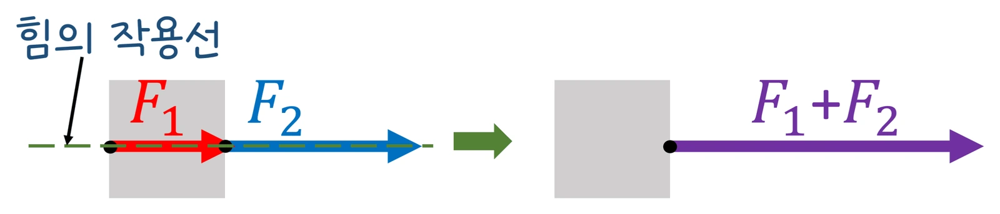
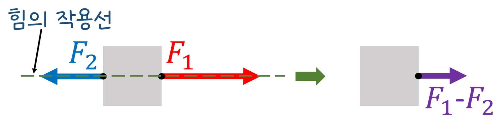

고3 역학과 에너지 · Ⅰ 시공간과 운동 · 웹툰 1화 「빗면 위의 썰매」
실험에서 두 힘 F₁·F₂의 크기와 사이각을 바꿔 가며 합력의 크기·방향을 힘 센서(0.01 N)로 재고 성분 계산과 비교했습니다. 같은 방향이면 합, 반대면 차, 90°면 피타고라스, 일반 각에서는 √(F₁² + F₂² + 2F₁F₂cosθ)였고, 물체는 합력 방향으로 a = F/m의 가속도를 얻었습니다. 벡터 합성·분해와 빗면 위의 운동을 정리합니다.
실험 데이터 되짚기
F₁ = 6 N, F₂ = 8 N, 물체 2 kg, 마찰 없음. 방향 φ는 F₁ 방향에서 잰 각입니다.
| 사이각 θ | F_x | F_y | 합력 |F| | 방향 φ | 가속도 (2 kg) |
|---|---|---|---|---|---|
| 0° | 14.0 | 0 | 14.0 N (최대) | 0° | 7.0 m/s² |
| 60° | 10.0 | 6.93 | 12.2 N | 34.7° | 6.1 m/s² |
| 90° | 6.0 | 8.0 | 10.0 N (3 : 4 : 5) | 53.1° | 5.0 m/s² |
| 120° | 2.0 | 6.93 | 7.2 N | 73.9° | 3.6 m/s² |
| 180° | −2.0 | 0 | 2.0 N (최소) | 180° (F₂ 쪽) | 1.0 m/s² |
합력은 |F₁ − F₂| ≤ |F| ≤ F₁ + F₂ 사이입니다. 합력이 0이면 힘의 평형 — 세 힘이 평형이면 벡터를 이어 붙여 삼각형이 닫힙니다.
힘은 크기와 방향을 가진 벡터라 크기만 더할 수 없습니다. 두 힘의 합력(알짜힘)은 평행사변형(삼각형) 법으로 구하거나, 각 힘을 x·y 성분으로 나눠 성분끼리 더한 뒤 다시 합칩니다: F_x = F₁cosθ₁ + F₂cosθ₂, F_y = F₁sinθ₁ + F₂sinθ₂, |F| = √(F_x² + F_y²), tanφ = F_y/F_x. 물체는 합력 방향으로 a = F/m의 가속도를 얻습니다(뉴턴 제2법칙). 순서: ① 모든 힘을 그린다 ② 편한 방향(운동 방향과 그 수직)으로 성분을 나눈다 ③ 방향별로 더한다 ④ F = ma. 두 예인선이 비스듬히 끄는 배, 두 줄로 매단 현수막, 활시위의 장력이 벡터 합의 예이며 비행기 항법은 비행기 속도와 바람 벡터를 더합니다.
교재 그림
한 줄 위의 두 힘 — 같은 방향이면 더하고, 반대면 뺀다


두 힘이 한 작용선 위에 있으면 크기를 그냥 더하거나 빼면 됩니다. 그런데 두 힘 사이에 각도가 생기면? 아래에서 직접 돌려 보세요.
움직여 보기
두 힘 사이각을 바꾸면 합력은?
점선이 만드는 평행사변형의 대각선이 합력입니다. 0°에서 최대(F₁+F₂), 180°에서 최소(|F₁−F₂|) — 표 1의 값과 맞춰 보세요.
빗면(30°)에서는 중력을 빗면 방향 성분 mg sinθ와 수직 성분 mg cosθ로 나눕니다. 제로 + 썰매 60 kg, μ = 0.1(g = 10): mg = 600 N, 빗면 방향 300 N, 수직 520 N = 수직항력, 마찰 52 N → 합력 248 N → a ≈ 4.1 m/s². 예측 게임 — 뭉치(100 kg) vs 제로(60 kg), 누가 빨리 가속할까? 뭉치 ‘무거운 나’, 제로 ‘같다’: a = (mg sinθ − μmg cosθ) ÷ m = g(sinθ − μcosθ) — 질량이 약분되어 나란히 내려갑니다(6화 등가 원리의 씨앗). 비스듬히 끄는 줄: 장력 200 N을 30° 위로 당기면 수평 성분 173 N이 앞으로 끌고, 수직 성분 100 N이 썰매를 살짝 들어 수직항력과 마찰을 줄입니다 — 짐수레 손잡이를 약간 들고 끄는 까닭.
움직여 보기
빗면 위의 썰매 — 무거우면 더 빨리 내려갈까?
무게를 60 kg ↔ 100 kg로 바꿔 보세요. 화살표(힘)는 모두 커지지만 가속도는 그대로 — a = g(sinθ − μcosθ)에서 질량이 약분됩니다. (μ = 0.1, g = 10 m/s²)
마찰을 무시하고 힘이 물체의 한 점에 작용한다고 보았습니다. 실제로는 작용점이 다르면 돌림힘이 생겨 물체가 회전할 수 있고, 마찰력이 합력을 상쇄해 정지해 있기도 합니다. 힘 센서·각도 읽기에 오차(±0.1 N, ±2°)가 있어 실제 합력은 계산과 몇 % 다를 수 있습니다. 고2 물리학에서는 한 줄 위의 힘만 다뤘다면 이제 평면 위 여러 방향의 힘을 한꺼번에 다룹니다.
6 N + 8 N: 0° 14 · 90° 10 · 120° 7.2 · 180° 2 · 빗면 a = g(sinθ − μcosθ) (질량 무관)
“결승 시즌 1라운드! 같은 빗면, 같은 썰매. 누가 더 빨리 가속할까? 난 무거운 나! 더 세게 끌려 내려가잖아.” “무거우면 끌어내리는 힘도 크지만, 마찰력도 커지고 움직이기도 어렵잖아. 같을 것 같아.”
웹툰 1화 · a = g(sinθ − μcosθ), 질량 m이 약분된다 — 제로 1 : 0 뭉치
“힘은 크기와 방향이 있는 벡터야. 빗면에서는 중력을 빗면을 따라가는 성분과 빗면에 수직인 성분으로 나누면 계산이 쉬워져.” “비스듬히 끌면 끄는 힘은 조금 줄지만, 나를 살짝 들어 줘서 마찰도 줄어드는구나.”
웹툰 1화 · 장력 200 N, 30°: 수평 173 N, 수직 100 N
|F| = √(25 + 144) = 13 N, φ = atan(12/5) = 67.4°(5 N 쪽에서), a = 13 ÷ 3 = 4.3 m/s².
수직항력 N = 1 000 − 100 = 900 N, 마찰 90 N. 수평 알짜힘 = 173 − 90 = 83 N → a = 0.83 m/s². 수평으로 끌면 마찰 100 N, 알짜 100 N → 1.0 m/s² — 이 경우엔 수평이 더 유리하지만 μ가 크면 비스듬히 끄는 쪽이 이깁니다.